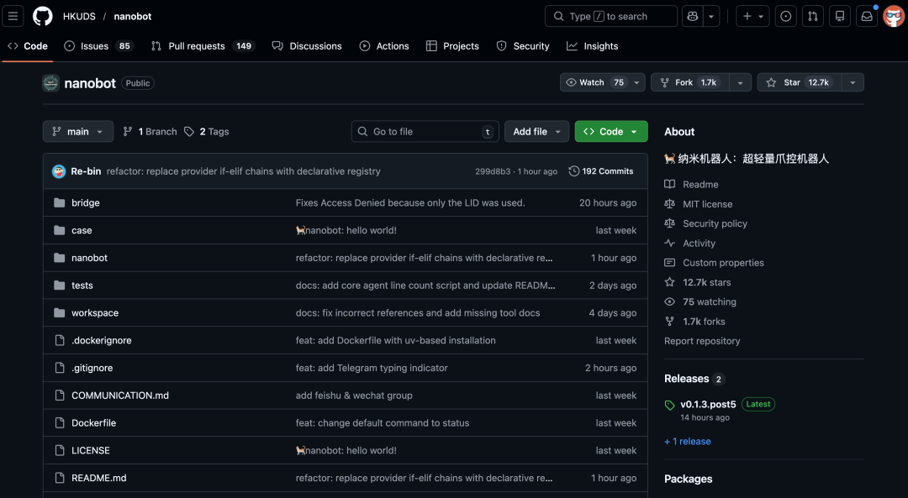
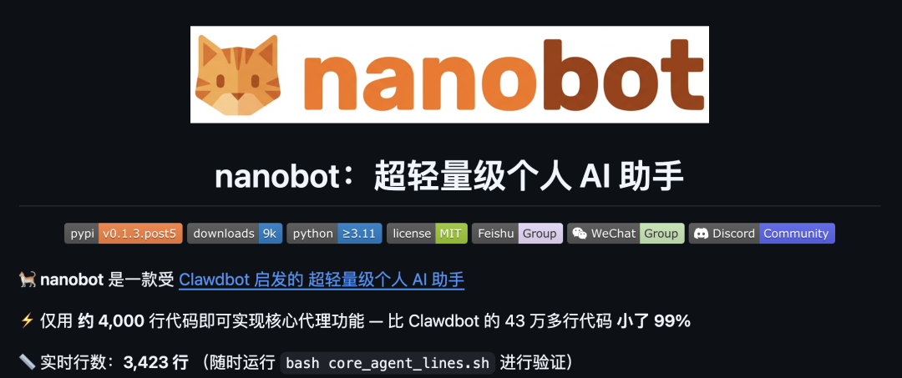
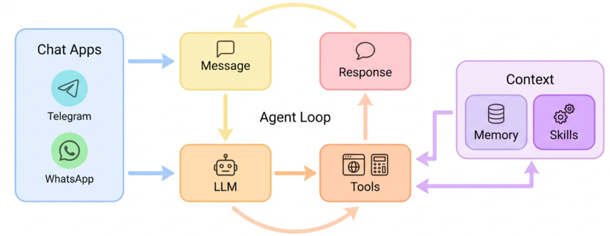
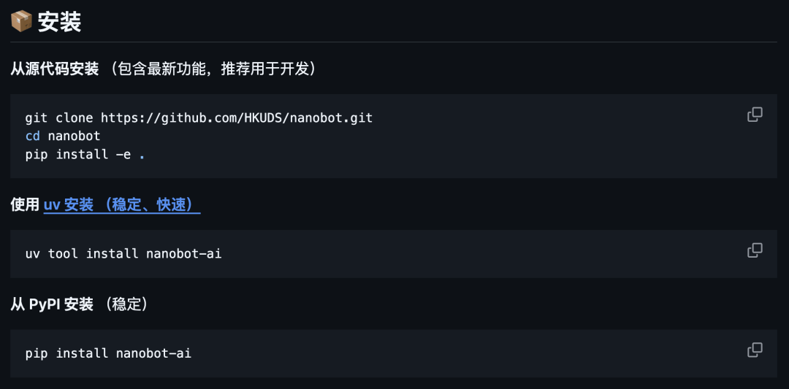

这个叫 nanobot 的项目是香港大学数据科学实验室开源的项目。
既然 nano 开头，就说明这是一个超轻量级个人 AI 助手，非常注重可读性、研究友好、启动快、易集成多模型和多聊天通道。
开源没多长时间，就 1.3 万的 Star 了。

它受 Clawdbot 启发，整个项目也就 4000 行代码，原版 Clawdbot 大概有 43 万行代码，缩减了 99%。
所以说，你想研究研究 Clawbot 怎么搞出来的，可以先看看这个 nanobot，非常易读、修改和扩展。
01
项目简介

nanobot 也支持通过 Telegram、Discord、WhatsApp 以及飞书与 AI 交互。特别是对飞书的支持，使其非常适合国内办公场景。
而且它支持几乎所有主流 LLM 提供商，包括 OpenRouter、 Claude、OpenAI、DeepSeek、Google Gemini，以及通过 vLLM 运行的本地模型。
这是 nanobot 的架构图：

Agent Loop 负责根据当前任务、上下文和工具结果进行连续推理和行动。记忆、上下文管理模块来负责短期、长期记忆、上下文裁剪与重组。
Skills & Tools 系统是一组可调用工具，比如调用 GitHub、天气、tmux、shell 等。
除此之外还有 Chat 应用，负责接收、发送消息的多种通道适配层。LLM 模块来管理和自动识别不同 LLM 提供商和模型。
02
能干啥？
你可以用 nanobot 搭建自己的个人 AI 助手，比如：
让 nanobot 做全栈软件工程师，能理解代码库、协助开发、部署、扩缩。
进行全天候实时市场分析，监控行情、发现趋势、生成洞见：
智能日常事务管理器，管理日程、自动执行重复任务、整理 TODO 啥的：
个人知识助手，学习你的资料、进行长期记忆和推理啥的。
02
如何使用
你可以通过 uv 或 pip 快速安装 nanobot。

安装完之后，你需要配置 API Key，比如 OpenRouter 或 OpenAI 的 Key，然后通过简单的命令行指令即可启动：
① 初始化
nanobot onboard② 配置
对于 OpenRouter 的用户，在 ~/.nanobot/config.json 中配置一下：
{"providers": {"openrouter": {"apiKey": "sk-or-v1-xxx"}},"agents": {"defaults": {"model": "anthropic/claude-opus-4-5"}}}
③ 开整
nanobot agent -m "二加二等于几？"就这样，你在两分钟内就拥有一个可以工作的 AI 助手了。
目前 nanobot 这个轻量的 AI 助手特别火，我感觉主要是因为开发者厌倦黑盒式的大型框架，想要一个自己能完全看懂并掌控的代码库。
对于学术界，一个干净的基座比一个臃肿的产品更适合做实验。
而且它证明了构建一个功能强大的 AI Agent 不需要复杂的微服务架构，单体 Python 脚本依然能打。
开源地址：https://github.com/HKUDS/nanobot03
点击下方卡片，关注逛逛 GitHub
这个公众号历史发布过很多有趣的开源项目，如果你懒得翻文章一个个找，你直接关注微信公众号：逛逛 GitHub ，后台对话聊天就行了：